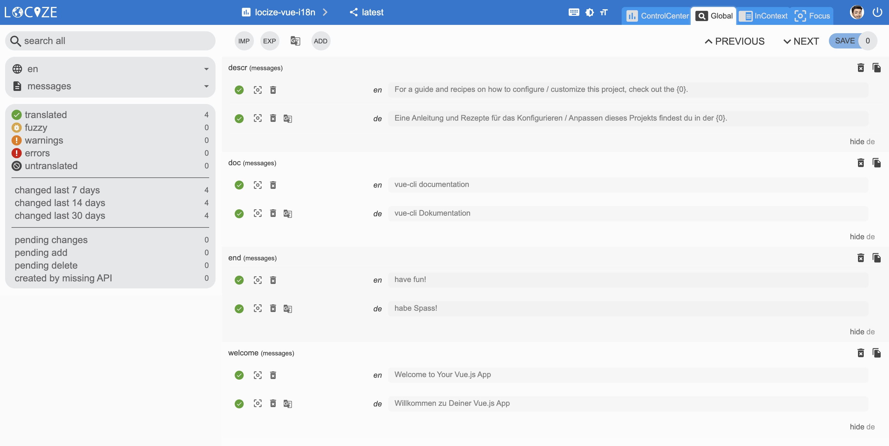
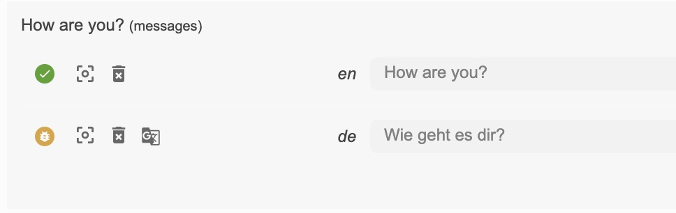

It’s joyful to work with Vue.js. The design is elegant and the robust first-party additions which can be coupled with, make building browser apps a pleasure.
The most famous i18n plugin for the progressive JavaScript framework Vue.js is probably Vue I18n.
Beside templates, directives, data binding, event handling, etc... with v3 Vue.js is now introducing also Composition API, Teleport, Fragments... and Suspense.
The appropriate version to Vue.js v3 for Vue I18n is v9.
So how does a basic vue-i18n setup look like?
Let's get into it...
Prerequisites
Make sure you have Node.js and npm installed. It's best, if you have some experience with simple HTML, JavaScript and basic Vue.js, before jumping to vue-i18n.
exportconst i18n = createI18n({ locale: 'en', // set locale fallbackLocale: 'en', // set fallback locale messages: { en: { message: { welcome: 'Welcome to Your Vue.js App' } }, de: { message: { welcome: 'Willkommen zu Deiner Vue.js App' } } } // If you need to specify other options, you can set other options // ... })
createApp(App).use(i18n).mount('#app')
Now let's create a first component TranslationShowCase.vue:
exportconst i18n = createI18n({ locale: 'en', // set locale fallbackLocale: 'en', // set fallback locale messages: { en: { message: { welcome: 'Welcome to Your Vue.js App', descr: 'For a guide and recipes on how to configure / customize this project, check out the {0}.', doc: 'vue-cli documentation', end: 'have fun!' } }, de: { message: { welcome: 'Willkommen zu Deiner Vue.js App', descr: 'Eine Anleitung und Rezepte für das Konfigurieren / Anpassen dieses Projekts findest du in der {0}.', doc: 'vue-cli Dokumentation', end: 'habe Spass!' } } } // If you need to specify other options, you can set other options // ... })
Having the translations in your code file works, but is not that suitable to work with, for translators.
Using locize separates the translations from the code.
Having imported all translations should look like this:

const namespace = 'messages'// your namespace name added in locize locizer.init({ projectId: 'your-locize-project-id' })
exportconst i18n = createI18n({ locale: locizer.lng, // locizer.lng is the language detected in your browser. fallbackLocale: 'en'// set fallback locale // If you need to specify other options, you can set other options // ... })
// called from within setup hook in App.vue exportconst loadMessagesPromise = newPromise((resolve, reject) => { locizer.loadAll(namespace, (err, messages) => { if (err) return reject(err); Object.keys(messages).forEach((l) => { i18n.global.setLocaleMessage(l, messages[l]) }) resolve(messages) }) })
The translations are now loaded asynchronously, that's why we export the loadMessagesPromise and use it in your App.vue:
Now, as long your translations gets loaded you'll see the fallback template:
If your browser is configured with german language, you may now have seen the language automatically was set to german by default. This is because of the language detection feature of locizer. You can configure the language detection with other options
By default the language detection also is looking for the query parameter lng, so you can also type this url to test this: http://localhost:8080/?lng=de
save missing translations
I wish newly added keys in the code, would automatically be saved to locize.
Your wish is my command!
Extend the i18n.js file with the locize api-key and the handleMissing function:
const namespace = 'messages'// your namespace name added in locize const apiKey = 'my-api-key'// used for handleMissing functionality, do not add your api-key in a production build locizer.init({ projectId: 'your-locize-project-id', apiKey })
exportconst i18n = createI18n({ locale: locizer.lng, // locizer.lng is the language detected in your browser. fallbackLocale: 'en'// set fallback locale // If you need to specify other options, you can set other options // ... })
// called from within setup hook in App.vue exportconst loadMessagesPromise = newPromise((resolve, reject) => { locizer.loadAll(namespace, (err, messages) => { if (err) return reject(err); Object.keys(messages).forEach((l) => { i18n.global.setLocaleMessage(l, messages[l]) }) resolve(messages) }) })
exportfunctionhandleMissing (locale, key) { if (!apiKey) return if (locale !== locizer.referenceLng) return locizer.add(namespace, key, key) }
Lastly, with the help of the auto-machinetranslation workflow, new keys not only gets added to locize automatically, while developing the app, but are also automatically translated into the target languages using machine translation:
